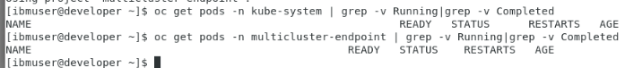
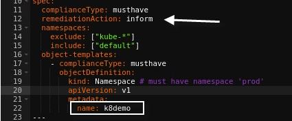
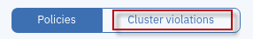
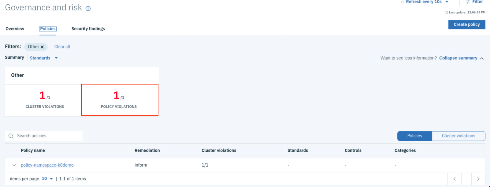
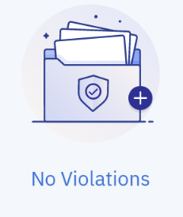
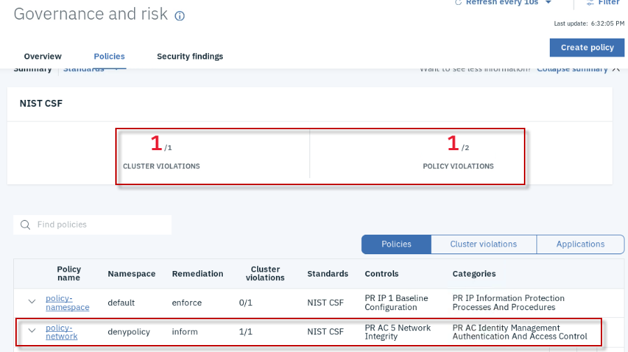
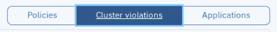
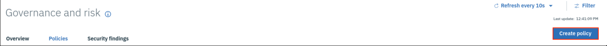
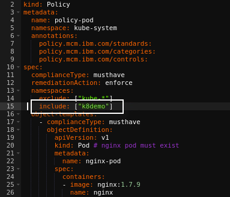
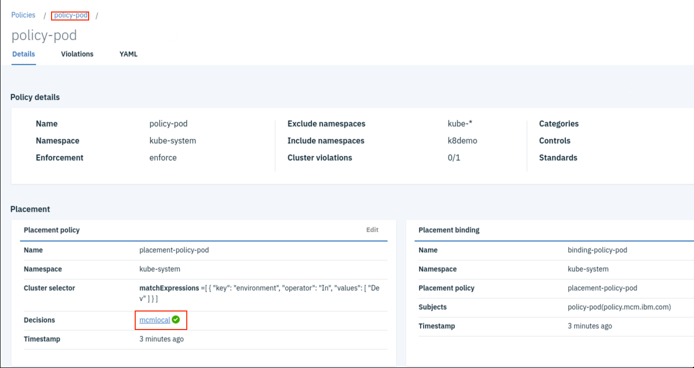

Lab: ITC-26
Cloud Pak for MultiCloud Management - Governance Policy Lab
Lab. How to create Policy and enforce it
The IBM Cloud Pak™ for Multicloud Management, running on Red Hat® OpenShift®, provides consistent visibility, governance and automation from on premises to the edge. Enterprises gain capabilities such as multicluster management, event management, application management and infrastructure management. Enterprises can leverage this IBM Cloud Pak to help increase operational efficiency that is driven by intelligent data analysis and predictive golden signals and gain built-in support for their compliance management.
You can also take advantage of the governance, as with this IBM Cloud Pak for Multicloud Management, you can manage your multicloud environments with a consistent set of configuration and security policies across all applications and clusters.
This lab walks you through the process of setting up policies and evaluating them. It also serves as examples for creating your own policies.
Here is a schematic describing how is the environment provided to create your policies, inform and enforce to clear violations. One hub used also as local cluster and a managed/remote cluster.
Objective
The objectives of this lab are to:
-
Learn how to create different types of policies, check the state and enforce them to clear violations.
-
Enforce a complex policy using a defined use-case
Prerequisites
The following prerequisites must be completed prior to beginning this lab:
-
Familiarity with basic Linux commands and Kubernetes commands
-
A Management Cluster is available and ready to use
-
An OpenShift cluster that needs to be managed
The following symbols appear in this document at places where additional guidance is available.
| Icon | Purpose | Explanation |
|---|---|---|
 |
Important! | This symbol calls attention to a particular step or command. For example, it might alert you to type a command carefully because it is case sensitive. |
 |
Information | This symbol indicates information that might not be necessary to complete a step, but is helpful or good to know. |
 |
Trouble-shooting | This symbol indicates that you can fix a specific problem by completing the associated troubleshooting information. |
What is Already Completed
Two OpenShift Clusters pre-deployed where one cluster acts as Management Cluster and other acts as managed cluster.
-
On the management cluster, the management software is loaded.
-
The management cluster (named as local-cluster) also configured to manage itself.
-
The managed cluster (named as managed-cluster)
-
The Developer VM is the one you will use to access and work with OCP in this lab.
The login credentials for the Developer VM are:
User ID: ibmuser Password: passw0rd (this is the same sudo password)
Lab Tasks
During this lab, you will complete the following tasks:
-
Log in to the Management Cluster from workstation
-
Use the console to create a few governance policies
-
Check the state of the created policies
-
Change the policy enforcement and validate the changes
Execute Lab Tasks
Log in to the Workstation VM and get started
-
If the VMs are not already started, Launch the six lab VMs by clicking the Play button highlighted in the above picture.
-
After the VMs are started (takes few minutes), click the Developer VM icon to access it.
The Developer VM’s Linux Desktop is displayed. You will execute all the lab tasks on this VM.
Check the Environment
In this task, let’s check the Management environment to ensure it is up and its pods are all running.
To check the environment, login to the “Developer” VM using userid: ibmuser and password: passw0rd. The workstation has the required tools oc, cloudctl and helm tools installed
-
Launch a terminal window and login to Management OpenShift Cluster.
oc login -u admin -p passw0rd https://api.demo.ibmdte.net:6443 -
Verify all of the managent pods are running in the Management clusters
oc get pods -n kube-system | grep -v Running|grep -v Completed oc get pods -n multicluster-endpoint | grep -v Running|grep -v Completed

 |
There should NOT be any pods listed in the results. That indicates all of the pods are in the Running state. If there are pods listed, and not running, contact the instructor, as the managent cluster may not be running correctly. |
-
Launch a Mozilla Firefox browser, login to the Mutlicloud Management Console, there is already a bookmark configured
URL: https://icp-console.apps.demo.ibmdte.net/multicloud/welcome
userid: admin password: passw0rd -
You should see the Multicloud Management Consoles, Welcome page (read below, if you do not get this page)

 |
NOTE: If you see the incorrect page: “IBMCloud Pak” screen, Rerun the URL link again. This appears to be a bug in our lab environment
|

Reference: Introduction to IBM Multicloud Manager Policies
IBM Multicloud Manager enables you to check whether your clusters are operating properly by comparing the current configuration of various resources against your desired state.
The system enables you to create compliance templates that can check policies against roles, or pod objects within the clusters.
IBM Multicloud Manager supports many types of policies.
-
Network policies : Handled by the SDN (software defined network) resource
-
MCM Policies : handled by the MCM resource definition
-
Object template: Pods
-
Role template: Roles and role bindings
-
-
Placement Policies : Handled by the MCM
-
Mutation Policies : Handled by the mutation advisor resource
- Container changes
Remediation actions:
There are two ways to handle a policy violation in your clusters:
-
Auto remediation by policy controller when ‘enforce’ action is specified in policy
- “Inform” action provides notification that a cluster is out of compliance, but does enforce compliance.
-
Policy controller generates Cloud Event Manager incidents for policy violations
MCM Hub generates audit logs to Security information and event management (SIEM) for findings (policy violations are also mapped to findings)
Example: Mutation Policy
Refer to the documentation for more information:
https://www.ibm.com/support/knowledgecenter/SSFC4F_1.2.0/mcm/compliance/compliance_intro.html
Create a Namespace enforcement Policy
This task creates a policy that ensures that a specified namespace is present in clusters that match the selection criteria.
-
Launch a new Terminal Window, and log in to OpenShift Cluster
oc login -u admin -p passw0rd https://api.demo.ibmdte.net:6443 -
Run the following command to ensure that the environment does not already have a namespace that the “Namespace Policy” will create and enforce.
oc get ns | grep k8demo where <k8demo> is the name of the namespace we are searching
|
The previous command should NOT return any results. NOTE: If the namespace already exists, run the following command to delete it: oc delete project k8demo |
-
Return to the MCM Web Console
https://icp-console.apps.demo.ibmdte.net/multicloud/welcome
Login using the following Credentials: User:admin Password: passw0rd -
Navigate to Menu > Govern risk. Here you can view and create compliance policies for your managed clusters**

-
Click the Policies tab. This view displays the policies that have been created and the dashboard of policy compliance for each cluster. Currently, you do not have any compliance policies created.

-
Click on create policy
 button. Fill the values as specified in the table below:
button. Fill the values as specified in the table below:
| Field Name | Value |
|---|---|
| Name | policy-namespace |
| Namespace | Choose the “default” namespace |
| Specifications | Choose: Namespace-must have namespace ‘prod’ Note: You will modify the name prod to k8demo. Selecting this will provide a template to have custom namespace policy definition |
| Cluster binding | Choose name: “local-cluster” |
-
In the yaml file section, on the right, change prod to k8demo.
Changing the namespace will change the Policy Specifications to Custom Specifications as below.
Notice that the policy is set to “inform” rather than “enforce”.

-
Use the Create button, to create your new policy.
-
If you are not redirected automatically navigate to Menu > Govern risk to return to the Dashboard
-
In few seconds, the policy controller will check if the namespace k8demo is present and provides information regarding the current compliance of the policies.
Remember, you didn’t enforce this policy. Instead we specified inform. As such, the Governance and risk view displays a policy violation in our cluster, as illustrated below.

-
Use the Cluster Violations link  to find which cluster is violating the policy. The link is located to the far right of the screen, as illustrated below.
The local-cluster cluster is in violation of the policy which requires a namespace called “k8demo” to exist.
The local-cluster cluster is our cluster, and the same cluster that verified “k8demo” namespace does not exist. Hence it shows that there is no namespace k8demo in the cluster.

-
Verify the k8demo namespace still does not exist.
oc get project | grep k8demoThere should NOT be a namespace named k8demo listed, which indicates the policy did not ENFORCE it to be created.
-
Change the “policy-namespace” policy to be enforced
When a policy is in “enforce” mode, the namespace will automatically be created, if it does not exist, thereby enforcing the cluster into compliance.
a) In the policies view, select POLICY VIOLATIONS link, as shown below

b) Then, select the policy named “policy-namespace” and go to YAML view
c) Click on the button to go into edit mode.
d) Change the value of “remediationAction: inform” to “remediationAction: enforce”
e) Click the to submit the change

-
Select the policy-namespace link. A few seconds later, the policy violation will be gone
-
You also can validate the same from the Violations view.

-
Run the following command to ensure that the k8demo namespace has been created in the cluster.
oc get ns | grep k8demo
-
Try deleting the namespace and check how is being created automatically again.
oc delete project k8demo
Create a Network Policy to enforce on a namespace
In this task, you create a network policy just for informational purpose. Then modify it to enforce the policy. In this scenario, the Network Policy is used to control (block) network traffic from other pods.
You will perform the following tasks:
-
Create a project (namespace) for this policy
-
Create NetworkPolicy targeting the new namespace
-
Check if the network policy is configured correctly
-
Let’s create a new project to enforce a Network Deny Policy to disable network traffic from pods
a) login to Management OpenShift Cluster
oc login -u admin -p passw0rd https://api.demo.ibmdte.net:6443b) Create a new project with name denypolicy
oc new-project denypolicy -
Return to the MCM console. Then go to Menu -> Governance and Risk
This launches the policy management view. If there are no policy, no policies will be listed.
-
Select the button to create a new policy

-
Configure the new network policy according to the table below
| Field Name | Value |
|---|---|
| Name of the policy | policy-network |
| Namespaces | Choose: “denypolicy” |
| Specifications | Choose: “Networkpolicy-deny network request” |
| Cluster binding | Choose name: “local-cluster” |
-
In the right side section (YAML), change the namespace from include: [“default”] to include: [“denypolicy”]

-
Select the button which returns console to Policies view. After few seconds, you will find that there is a cluster violation on the network policy, policy-network

-
Select the CLUSTER VIOLATIONS link to view which cluster is violating this policy. As, this policy is configured for informational purpose, the violation is just shown. It is not rectified.


-
Change the “policy-network” policy to be enforced
a) In the policies view, select POLICY VIOLATIONS

b) Then, select the policy named “policy-network” and go to YAML view
c) Click on the button to go into edit mode.
d) Change the value of “remediationAction: inform” to “remediationAction: enforce”
e) Click the to submit the change
-
Go back to the policy-network view and see the violation is cleared


-
You can validate the network policy that is created on the namespace “denypolicy”.
a) Using the CLI, run the following command to get the network policies for the namespace
oc -n denypolicy get networkpolicies
Create Policy that limits memory range for a namespace
In this task, you will create a policy where it enforces limits for memory range in a given namespace.
-
Return to the MCM console. Then go to Menu -> Governance and Risk.
This launches the policy management view. If there are no policy, no policies will be listed.
-
Select the button to create a new policy

-
Configure the new policy, enforcing quota limits, according to the table below:
| Field Name | Value |
|---|---|
| Name | policy-quotalimit |
| Specifications | Choose: Limitrange-limit memory usage |
| Namespaces | Choose: k8demo |
| Cluster bindings | Choose name: “local-cluster” |
| Enforce if supported | Check the box |
-
In the right-side section (YAML), change the namespace where the quota needs to be created.
a) Change from include: [“default”] to include: [“k8demo”], which is a namespace we created earlier in the lab, by policy enforcement.
As an enhancement, you will modify the YAML template to add the quota for the namespace, like max and min values for CPU and Memory along with a default range.
-
Modify the YAML to include the limits that were mentioned in the previous step.
a) The YAML file section as highlighted below before and after is shown below. Ensure the whitespaces match the syntax, as illustrated below:
|
 |
|---|---|
|  |
-
Review the YAML before you create the policy

-
Select the button to create the policy
-
Validate if the policy is enforced.

-
Validate the quota is created on the k8demo namespace
oc -n k8demo get limits
oc -n k8demo get limits -o yamlThe resource limits for the k8sdemo namespace are shown below.
Create Policy that a pod must exist in a given namespace
In this task, you will create a policy where it enforces that a pod is present in a given namespace.
-
Return to the MCM console, and go to Menu -> Governance and Risk.
This launches the policy management view. If there are no policy, no policies will be listed.
|
|

-
Select the button to create a new policy
-
Configure the new policy, requiring pod be present, according to the table below
| Field Name | Value |
|---|---|
| Name | policy-pod |
| Specifications | Choose: Pod-nginx pod must exist |
| Namespaces | Choose: k8demo |
| Cluster bindings | Choose name: “local-cluster” |
| Enforce if supported | Check the box |
-
In the right side section (YAML), change the namespace where the pod needs to be created.
a) Change from include: [“default”] to include: [“k8demo”], which is a namespace we created earlier in the lab, by policy enforcement.

b) Review the policy settings, as illustrated below

-
Select the button to create the policy
-
Select the policy-pod to launch the policy view. You will find initially it will be in violation and will quickly turn to green as the enforcement kicks in and creates the pod.
 |
Known issue: False positive violation when enforcing policy to create a pod #2286This will be fixed in the next iteration |

-
From the CLI validate if the pod is running in the k8demo namespace
oc -n k8demo get pods
Summary
In this lab, you have learned how to create policies both for informational and enforcement purposes. You also learnt how to modify the existing policies to change from inform to enforce mode.
Congratulations! You have successfully completed the lab “Policy Enforcement”